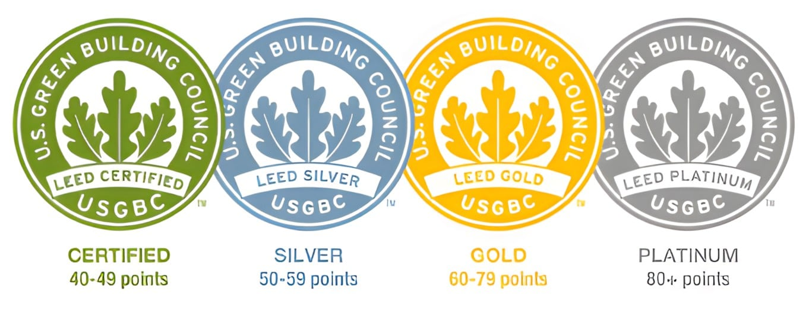

Green Data Center
O que é um data center verde e quais são os seus diferenciais
Um data center verde é um centro de processamento de dados que é projetado para maximizar a eficiência energética e minimizar o impacto ambiental. Em outras palavras, é um data center que utiliza tecnologias e práticas sustentáveis para reduzir o consumo de energia e as emissões de carbono.
Essas tecnologias e práticas incluem o uso de equipamentos de TI energeticamente eficientes, a virtualização de servidores para maximizar a utilização dos recursos de hardware, o uso de fontes de energia renovável, como energia solar ou eólica, e a adoção de técnicas de resfriamento eficientes para reduzir a necessidade de ar-condicionado.

Esses são importantes porque os centros de processamento de dados consomem uma quantidade significativa de energia e emitem grandes quantidades de gases de efeito estufa, contribuindo para a mudança climática. Ao adotar práticas e tecnologias sustentáveis, os data centers verdes ajudam a reduzir o impacto ambiental e a mitigar as mudanças climáticas.
Além disso, alguns data centers se esforçam para obter certificações, como LEED (Leadership in Energy and Environmental Design) ou ENERGY STAR, que validam sua adesão aos padrões de sustentabilidade ambiental, buscando sempre alcançar visibilidade e validação de seu objetivo principal: minimizar sua pegada de carbono, conservar recursos e promover a sustentabilidade ambiental de longo prazo, mantendo uma infraestrutura de TI confiável e de alto desempenho.

Como são os gastos energéticos?
No geral, embora os data centers verdes possam exigir custos iniciais mais altos para sua infraestrutura, suas tecnologias de eficiência energética, o uso de energia renovável (solar, eólica, hidrelétrica ou geotérmica, por exemplo), além do uso de tecnologias para virtualização dos sistemas e otimização do resfriamento, podem resultar em economias de custo significativas ao longo do tempo.
Essas economias de custos podem vir de gastos reduzidos com energia e evitando multas ambientais, bem como dos benefícios positivos de marketing e relações públicas de ser uma organização ambientalmente responsável. Além disso, estima-se que em comparação com os data centers convencionais, os data centers verdes tenham uma redução de até 80% no uso de energia.